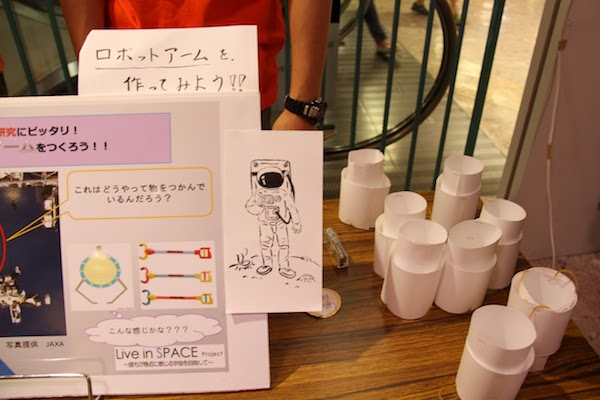

12回目のFEEL！(FEELとは、“買物途中”のお客様が、ほんのちょっと宇宙を好きになるイベントです!）
開催日:6月27日(土)、28(日)
開催場所：イオン相模原ショッピングセンター
お月見や暦など、昔から月は人類の文化と 密接にかかわってきました。
古くから人々を惹きつけてきた月は、今や人 類の宇宙開発の大きな目標として探査活動が 進められています。
このブースでは、レゴリスシミュラント(月模 擬砂)の展示などを通して月探査の現状と未 来の展望についての紹介をします。
 宇宙飛行士は、宇宙で活躍するあこがれの職業です。今年は油井亀美也宇宙飛行士が打ち上げられる予定もあり、多くの日本人も活躍しています。このブースでは、そんな宇宙飛行 士の仕事や人柄、そして宇宙飛行士になるためにはどのような試験があるのか紹介しました。
宇宙飛行士は、宇宙で活躍するあこがれの職業です。今年は油井亀美也宇宙飛行士が打ち上げられる予定もあり、多くの日本人も活躍しています。このブースでは、そんな宇宙飛行 士の仕事や人柄、そして宇宙飛行士になるためにはどのような試験があるのか紹介しました。
宇宙飛行士心理テストにおいては、来場者の方に回答していただいた簡単な質問を基に、どの宇宙飛行士タイプに属しているのかを診断していきます。
 近年の宇宙開発においては小惑星探査機「はやぶさ」が世間で大きな話題となりました。 はやぶさが話題になった理由のひとつに、はやぶさが幾度となく直面した数々の困難が挙げ られます。度重なるトラブルを経てなお地球に帰還し、貴重なサンプルを持ち帰ったはやぶさ の姿は多くの人を感動させました。はやぶさには困難に打ち克つという物語があったのです。
近年の宇宙開発においては小惑星探査機「はやぶさ」が世間で大きな話題となりました。 はやぶさが話題になった理由のひとつに、はやぶさが幾度となく直面した数々の困難が挙げ られます。度重なるトラブルを経てなお地球に帰還し、貴重なサンプルを持ち帰ったはやぶさ の姿は多くの人を感動させました。はやぶさには困難に打ち克つという物語があったのです。
しかし、物語を背負った探査機ははやぶさだけではありません。金星探査機あかつきや小 型ソーラー電力セイル実証機イカロスといった宇宙機たちもまた、それぞれに物語を持ってい ます。
このブースでは、こうした物語についてイラストを駆使しながら紙芝居のような形式で紹介し ていきます。
 最近、生命がいる可能性がある星が太陽系内にも太陽系外にもたくさん見つかっており、 地球以外の生命が発見されることが期待されています。このブースでは最近の発見を紹介し、 宇宙人探しの最先端をみてもらいます。
最近、生命がいる可能性がある星が太陽系内にも太陽系外にもたくさん見つかっており、 地球以外の生命が発見されることが期待されています。このブースでは最近の発見を紹介し、 宇宙人探しの最先端をみてもらいます。
 小学生の夏休みと言えば、自由研究です。このブースでは、主に小学生を対象に、「宇宙」 に関する自由研究についての紹介を行ないます。宇宙を身近に知ってもらうことを期待してい ます。説明をするだけでなく、実際に簡単な実験を見せることで、より印象深く、宇宙を身近に 知ってもらうことを期待しています。